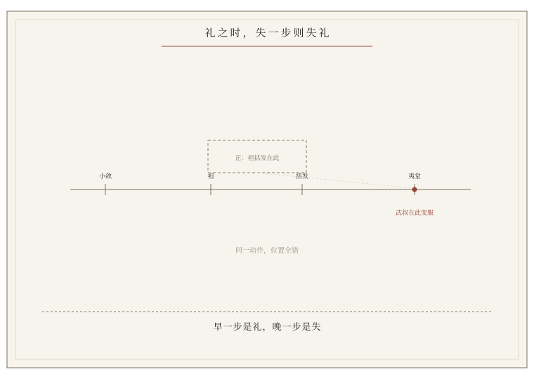

檀弓上 · 三·六十六 · 第 269 课
叔孫武叔之母死，既小斂，舉者出戶，出戶袒，且投其冠，括髮。子游曰：「知禮。」
说什么事：小敛已毕，抬尸的人出了门，他这才袒臂、摘下冠、束发——晚了一步。子游说「知礼」，是反话。
落在哪一层：礼，兼及礼数与礼意。论「礼之时」。
为何编在此位：上节论节之有无，此节论节之先后。有节而失时，与无节同。
【经】叔孫武叔之母死，既小斂，舉者出戶，出戶袒，且投其冠，括髮。子游曰：「知禮。」
【注】武叔，公子牙之六世孙，名州仇，毁孔子者。尸出户乃变服，失哀节。冠，素委貌。嗤之。
【疏】此一节论武叔失礼之事。案《世本》：「桓公生僖叔牙，牙生戴伯兹，兹生庄叔得臣，臣生穆叔豹，豹生昭子婼，婼生戌子不敢，敢生武叔州仇。」仇是公子牙六世孙，故云「公子牙六世孙」也。云「毁孔子者」，《论语》云「叔孙武叔毁仲尼」是也。案《士丧礼》：卒敛彻帷，主人西面冯尸，踊无算，主妇东面冯亦如之；主人髻发，袒，众主人免；下云「士举，男女奉尸，夷于堂」。《丧大记》亦云：卒小敛，主人袒，说髦，括发以麻；下云「奉尸夷于堂」。是括发在小敛之后、奉尸夷于堂之前，主人为欲奉尸，故袒而括发在前。今武叔奉尸夷堂之后，乃投冠括发，故云「尸出户，乃变服，失哀节」。云「冠，素委貌」者，案《杂记》云「小敛环绖，公、大夫、士一也」，注云「士素委貌，大夫以上素爵弁，而加此绖焉」；郑知然者，以《丧大记》云「君将大敛，子弁绖」，大夫大敛无文，明亦弁绖，大敛既尔，明小敛亦然，故云大夫以上弁绖。案武叔投冠，武叔是诸侯大夫，当天子之士，故云「士素委貌」。若然，案《士丧礼》主人括发，郑注云「始死，将斩衰者鸡斯，将括发者去笄、纚而紒」，无素委貌者，熊氏云「《士丧礼》谓诸侯之士，故无素冠也」；崔氏云「将小敛之时已括发，括发后大夫以上加素弁，士加素委貌，至小敛讫乃投去其冠而见括发」——今案《士丧礼》及《大记》皆小敛卒乃括发，无小敛之前为括发者，崔氏之言非也。○子游是习礼之人，见武叔失礼，反谓之「知礼」，故知嗤之也。
既小敛 小敛已毕。小敛，衣尸于户内。
举者出户 抬尸的人把尸抬出门。举者，执事者。
袒 袒露左臂。
投其冠 摘下冠。
括髮 束发以麻。
素委貌 士之冠。委貌，冠名；素，白。
失哀节 失哀之节次。
嗤之 讥之。注「嗤，昌之反」。
知礼 反语。子游习礼，故其言可信，其褒即为贬。
叔孙武叔的母亲死了。小敛之后，抬尸的人把尸抬出门，他这才袒臂、摘下冠、束发。子游说：「懂得礼啊。」
同一套动作，早一步是礼，晚一步是失。此节只错在「时」。
礼书的次序是：小敛卒，主人袒、说髦、括发以麻，然后奉尸夷于堂。袒与括发在「奉尸」之前，为的是「欲奉尸」——束了发才好抬。武叔等到尸已出户、已夷于堂，才投冠括发，动作全对，次序全错。
子游「知礼」二字，是《檀弓》中最冷的一句评语。子游是习礼之人，他若说「非礼」，人可辩；他说「知礼」，人无可辩——因为字面是褒，听着是刺。
注又点一句「毁孔子者」。记者记其人，未必无意：毁孔子的人，自己在礼上失了一步。
第一层 礼之时 礼有两个坐标：一为「节」（做几分），一为「时」（何时做）。此节所失在时。疏据《士丧礼》《丧大记》定其序：小敛—袒—括发—奉尸夷堂。武叔之序为：小敛—奉尸夷堂—袒—括发。动作相同，位置全错。
第二层 为什么袒括发在前 疏一句「主人为欲奉尸，故袒而括发在前」，把礼之所以然说尽：不是先有规定后有动作，是先有「要抬」这件事，才有「先束发」。礼之序，是从事之序来的。
第三层 褒词为贬 子游曰「知礼」，注「故知嗤之也」。此法后世常用：以人之所以自许者还之于人，使其自见。此与 267 的「请前」同类，一以让止，一以褒止。
第四层 素委貌之辨 疏详辨士素委貌、大夫以上素爵弁，又引熊氏、崔氏两说而断崔为非。此一层于经义无大关，然可见注家于「冠」之一物亦不许含糊。礼之密，正在这些看似琐碎处。
与今日何干 一件事做对了每一步，却错在先后——这是最常见的失败。会上该说的话，散会后说；该在门口迎的客，进了厅才起身。动作都没少，礼都没了。此节给的尺是：礼的顺序不是形式，是事的顺序。
| 左 | 右 |
|---|---|
| 小敛卒 | 当袒、当括发 |
| 奉尸夷堂 | 袒括发本在此前 |
| 武叔：尸出户乃变服 | 晚一步 |
| 投冠 | 素委貌 |
| 括发以麻 | 为欲奉尸 |
| 子游曰知礼 | 褒词为贬 |
| 毁孔子者 | 记者特记 |
| 失哀节 | 失时非失德 |
画一间小敛已毕的堂，视点平。堂中尸已抬至西阶之上、覆衾；抬尸的两人刚从户内退出，肩上还搭着绳。阶下一人（武叔，衣冠整齐、冠尚在头上、手正伸向自己的冠）站在堂下偏后，动作刚开始。堂侧立着一位士人（子游，袖手、侧目）。不写文字、不画人面细节。赭色只用在武叔头上那顶尚未摘下的冠与门槛上一道新擦的痕。
